How its begin
On the territory of modern Kyiv, man first appeared about 20,000 years ago
(the end of the ancient stone age). This is the famous Cyril's parking lot, which was
located in the northwestern part of the city.
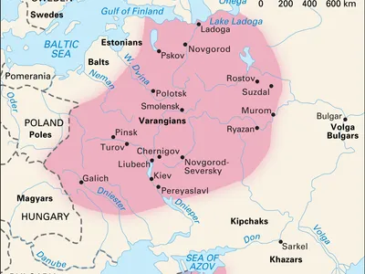
5th century
According to legend, at the end of the 5th - the beginning of the 6th century.
AD three brothers Kiy, Shchek and Khoryv and their sister Lybid founded a city on the steep
right bank of the Dnipro River and named it Kiev in honor of their older brother.
Archeological research revealed dwellings and farm buildings of the "town of Kiya" dated V-VI
centuries on Starokyivska Gora. The date of the foundation of Kyiv is officially accepted - 482.
Polyans, Drevlians, Uglichians, Severians, Tyverians united around Ancient Kyiv,
and the city of Kyiv became a great political center of East Slavic tribes.
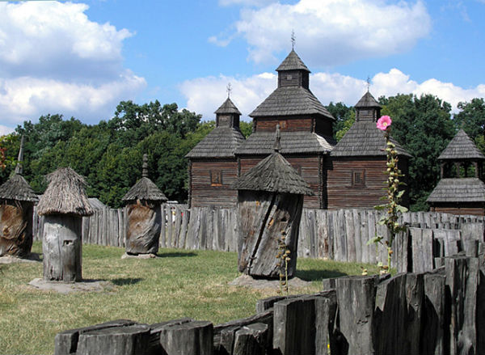
Christianity
In 988, Prince Volodymyr introduced Christianity as the official religion
in Kievan Rus. This contributed to the establishment and development of political and cultural
ties with the Byzantine Empire, Bulgaria and other states of Europe and the Middle East
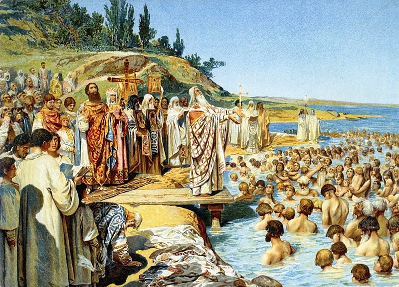
Saint Sophia
In the 11th century Kyiv becomes one of the most famous centers of civilization
in the Christian world. About 400 churches, 8 markets, more than 50,000 residents lived in the city.
In the early 11th century St. Sophia Cathedral was build by Yaroslav. It has 13 domes and was designed to rival Hagia Sophia in Constantinople.
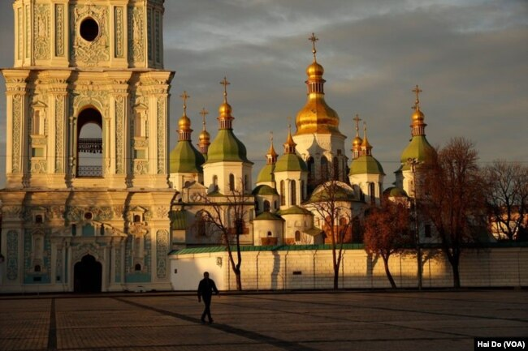
Magdeburg law
In the 15th century Magdeburg law was granted to Kyiv.
Now all city affairs were managed by the magistrate. Magdeburg law gave Kyiv
much greater independence in matters of international trade. Colonies of Greeks, Armenians,
and Genoese appeared in the city; Turkish, Moscow, and Polish merchants had their yards.
A market square appeared in Podil, which became the main square of the city.
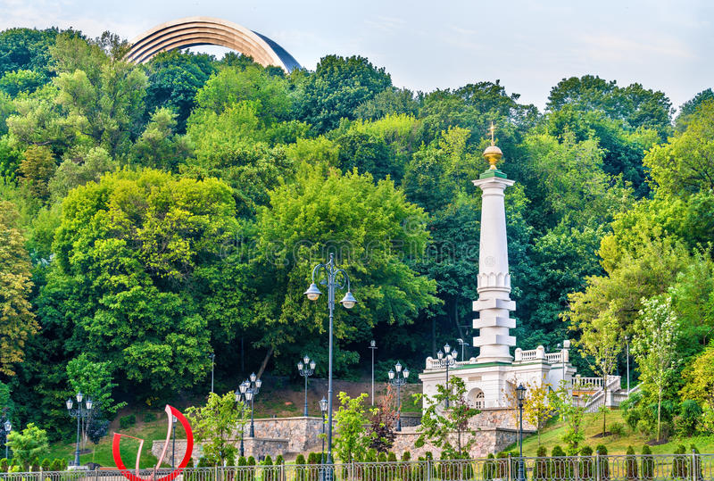
October revolution
After the October Revolution of 1917 (the fall of tsarism), the government in Kyiv changed several times.
Between 1917 and 1921, three governments of independent Ukraine, which was under the burden
of the Civil War, changed in Kyiv. On January 22, 1918, the Ukrainian Central Rada, headed by
the famous historian Professor Mykhailo Hrushevskyi, declared the independence of Ukraine.
Soviet Russia was one of the first to recognize the independence of Ukraine.
In 1919, the Ukrainian People's Republic headed by Simon Petliura solemnly
united with the Western Ukrainian People's Republic. But, unfortunately, it was
short-lived. After the defeats of the West Ukrainian and East Ukrainian armies,
the capture of Kyiv by Soviet Russia, Ukraine became part of the Soviet Union.
During the time of Soviet power, especially during the time of Stalin, the best
representatives of the Ukrainian intelligentsia: scientists, writers, artists,
engineers, soldiers - died in Gulag camps.
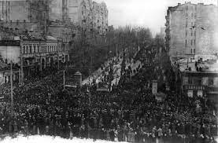
The Holodomor
The Holodomor (Ukrainian: Голодомо́р, romanized: Holodomor, IPA: [ɦolodoˈmɔr]; derived from морити голодом, moryty holodom, 'to kill by starvation'), also known as the Terror-Famine or the Great Famine, was a man-made famine in Soviet Ukraine from 1932 to 1933 that killed millions of Ukrainians. The Holodomor famine was part of the wider Soviet famine of 1932–1933 which affected the major grain-producing areas of the country.
While scholars universally agree that the cause of the famine was man-made, whether the Holodomor constitutes a genocide remains in dispute.
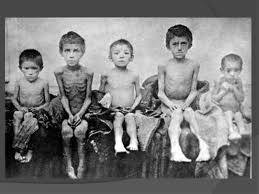
IIWW
During the Second World War, Kyiv was almost completely destroyed. The heroic defense of Kyiv lasted 72 days in 1941. On September 19, 1941, German-fascist troops entered the city. And on September 29, 1941, a world-famous tragic page in the history of Kyiv began with the execution of many thousands of Jews in Babi Yar. The Nazis built two more camps near the city. About 200,000 people, prisoners of war and civilians, were killed during the war. On November 6, 1943, the city was liberated.
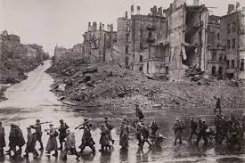
Chornobyl
The Chernobyl disaster on April 26, 1986 changed the life of Ukraine and its capital Kyiv. Chernobyl brought tens of thousands of deaths to Ukraine; hundreds of thousands of people lost their health; ecology and economy were affected. Today we are talking about the closure of the Chernobyl nuclear power plant
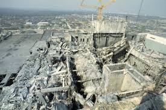
1991
On August 24, 1991, the Verkhovna Rada of Ukraine proclaimed the Declaration of Independence.
On December 1, 1991, 93% of the population of Ukraine voted for the independence of Ukraine during the referendum. Since then, Kyiv has been the capital of the independent state of Ukraine.
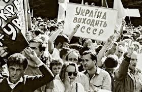
2014
The Revolution of Dignity also known as the Maidan Revolution or the Ukrainian Revolution, took place in Ukraine in February 2014 at the end of the Euromaidan protests, when deadly clashes between protesters and the security forces in the Ukrainian capital Kyiv culminated in the ousting of elected President Viktor Yanukovych, the overthrow of the Ukrainian government, and the outbreak of the Russo-Ukrainian War.
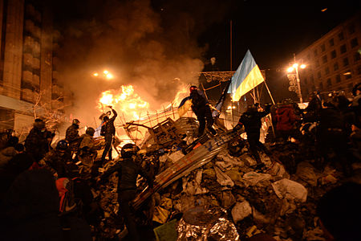
2022
Russia escalated war on February for all Ukraine. The battle of Kyiv was part of the Kyiv offensive in the 2022 Russian invasion of Ukraine for control of Kyiv, the capital city of Ukraine, and surrounding districts. The combatants were elements of the Russian Armed Forces and Ukrainian Ground Forces. The battle lasted from 25 February 2022 to 2 April 2022 and ended with the withdrawal of Russian forces.
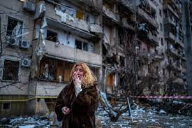